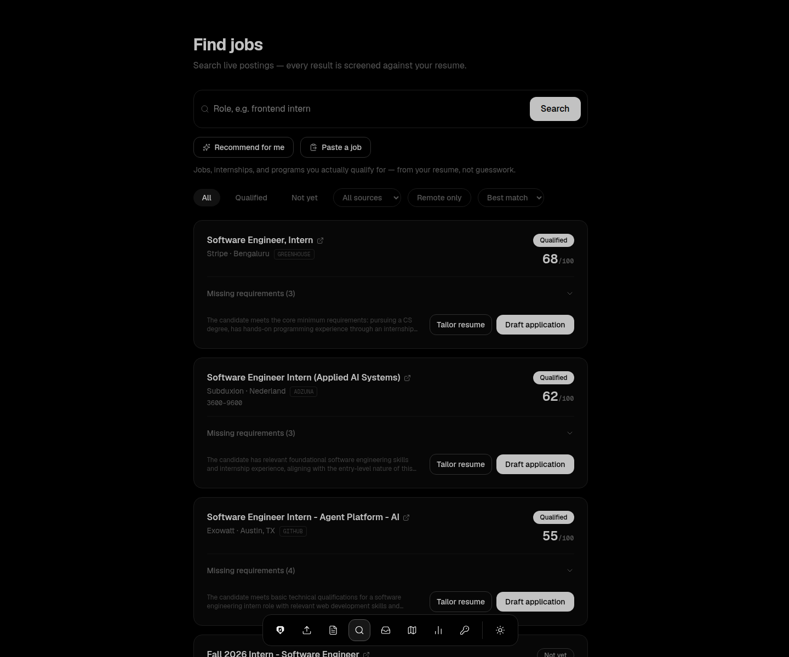
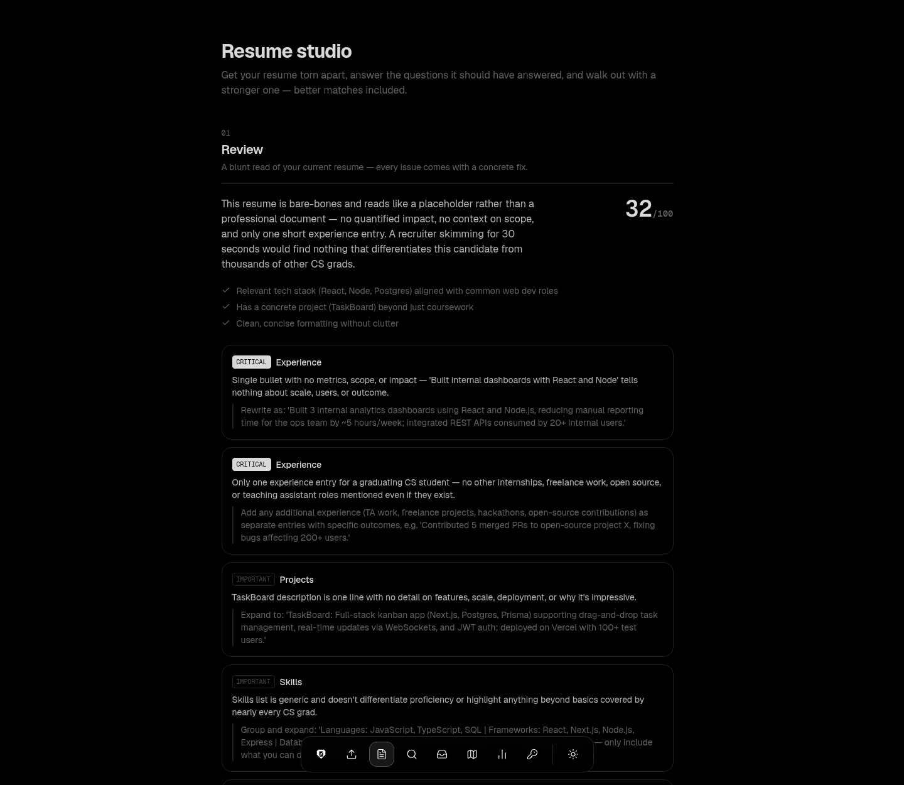
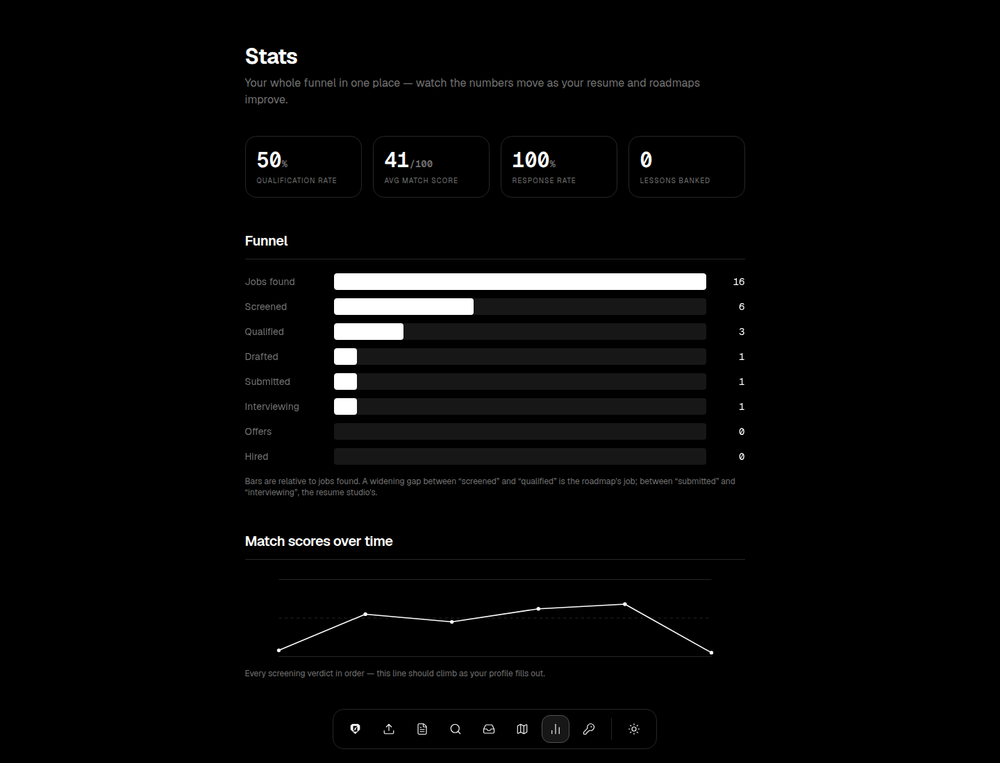
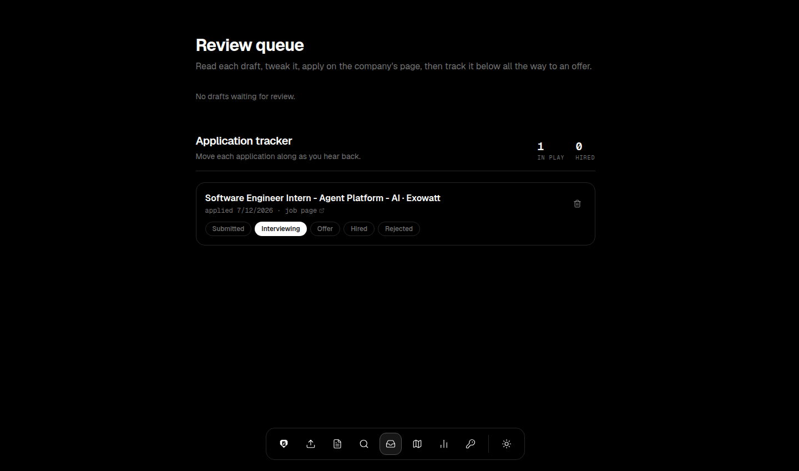
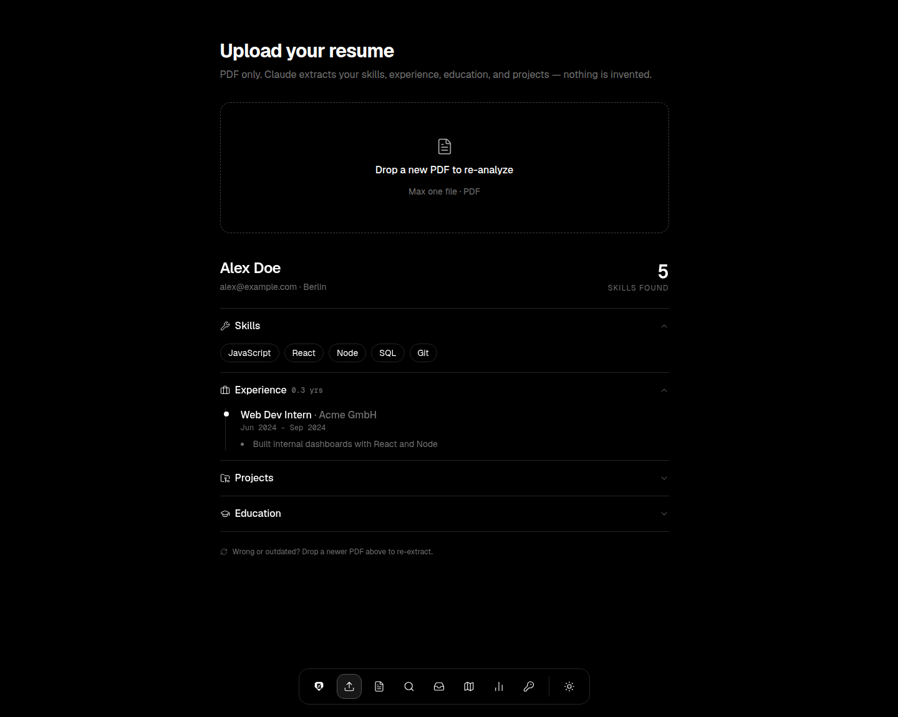
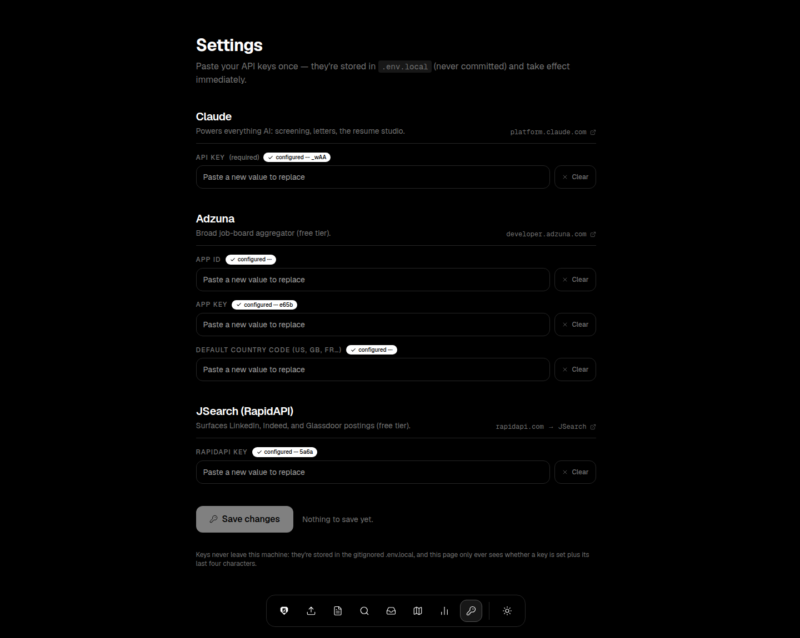

An AI job application copilot. It screens every posting against what's actually on your resume, drafts the applications you qualify for, and gives you a concrete roadmap for the ones you don't — yet.




Real screenshots from a live run (demo data). Everything below ships in the app — nothing mocked.
Drop in a PDF. Claude extracts a structured profile — skills, experience, projects, education — and shows you exactly what it read. Nothing is invented: if it's not on your resume, it's not in your profile. Every other feature builds on this.

One search covers Google's worldwide job index (which carries LinkedIn, Indeed, Glassdoor, and company career pages) plus Adzuna's per-country boards — strong coverage across Europe and the Americas, strictly filtered to the location you asked for. Every posting gets an honest 0–100 verdict against your resume: what matched, what's missing, and why. Or press "Recommend for me" for searches anchored to your actual field.
The Resume studio gives you a blunt review where every issue comes with a concrete fix, a grill-me interview that digs out what you left unsaid, and an honest rebuild — with 10 typeset PDF templates previewed with your own content and the top 3 recommended for your profile.
Qualified jobs get a drafted cover letter and a per-job tailored resume PDF — you review and hit send yourself, always. Track each application from submitted to offer; anything quiet for ten days gets a drafted follow-up note. Not qualified? You get a roadmap to close the gap, then re-screen and watch your score move.
Stats shows your whole pipeline — qualification rate, response rate, match scores over time. And every win gets distilled into lessons that sharpen your next application automatically.
API keys are pasted once into the Settings page — no config files. Everything is stored locally and never committed. Hosting it for friends? Configure free Google / GitHub / Microsoft sign-in and each person gets their own private data that follows their account.

Every command you need, one at a time, in order. Pick your operating system first — the commands adjust.
Press Cmd + Space, type Terminal, press Enter.
Open the Start menu, type PowerShell, press Enter.
Press Ctrl + Alt + T (or find "Terminal" in your apps).
This is where you'll paste each command below, one at a time, pressing Enter after each.
Node.js runs the app. You do not need to install Next.js or anything else — a later step downloads all of that automatically.
If you don't have Homebrew, install Node with the plain installer from nodejs.org instead (download, double-click, Next-Next-Finish) and skip this command.
brew install node
winget install OpenJS.NodeJS.LTS
Or download the installer from nodejs.org and click through it. Either way, close and reopen PowerShell afterwards.
sudo apt install -y nodejs npm
On a non-Debian distro, use your package manager or nvm.
brew install git
(macOS often has git already — running this is still safe.)
winget install Git.Git
sudo apt install -y git
node -v
you should see a version like v20.x or higher
git --version
you should see something like git version 2.x
git clone https://github.com/krishaanth5831/jobpilot.git
a jobpilot folder appears where your terminal is
cd jobpilot
This downloads Next.js and everything else the app needs. Takes a minute or two.
npm install
ends with a line like "added 400 packages"
npm run dev
you should see "Ready" and a http://localhost:3000 URL
Leave this terminal open — it IS the app. To stop it later, press Ctrl + C in this window.
Go to http://localhost:3000 — the jobpilot landing page should load.
jobpilot talks to two paid-nothing-upfront services. Create the keys, then paste them at http://localhost:3000/settings — they apply instantly.
Open the Upload tab, drop in your resume PDF, then hit Jobs and search. That's the whole loop — everything else (studio, tracker, stats) builds on it.